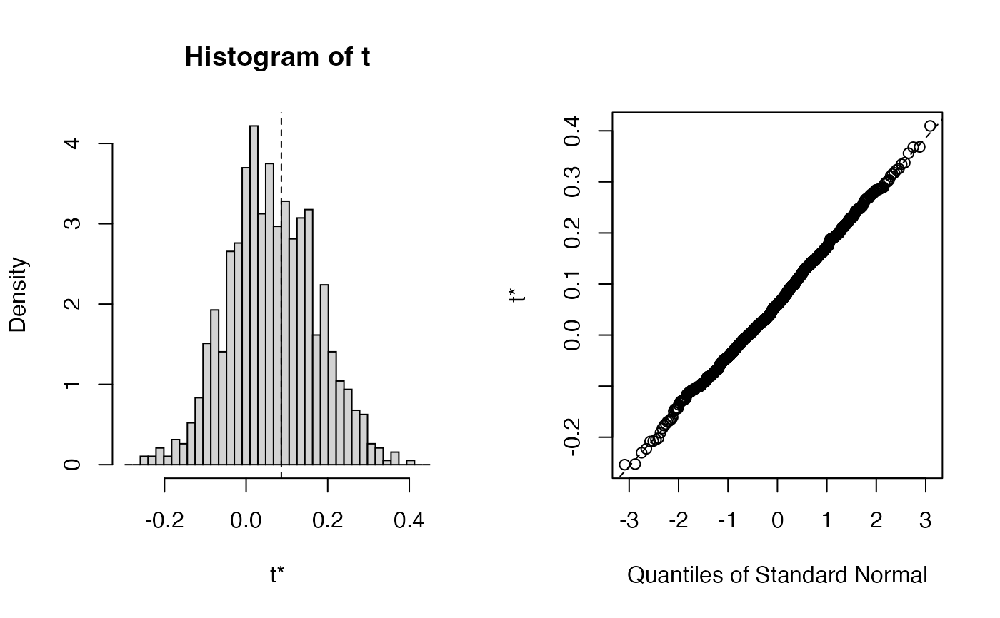

A precomputed bootstrap distribution of the coefficients of a model used in the vignette.
References
Régression Bêta PLS. (French) [PLS Beta regression.],
F. Bertrand, N. Meyer, M. Beau-Faller, K. El Bayed, N. Izzie-J.,
M. Maumy-Bertrand, (2013), J. SFdS, 154(3):143-159
Partial Least Squares Regression for Beta Regression Models.
F. Bertrand, M. Maumy (2021). useR! 2021, Zurich.
Examples
data(TxTum.mod.bootBR6)
str(TxTum.mod.bootBR6)
#> List of 11
#> $ t0 : num [1:60, 1] 0.0864 0.0684 0.0444 0.06 0.0132 ...
#> ..- attr(*, "dimnames")=List of 2
#> .. ..$ : chr [1:60] "Intercept" "age" "sexe" "HISTOADK" ...
#> .. ..$ : NULL
#> $ t : num [1:1000, 1:60] 0.3376 0.1388 0.017 -0.0992 0.0294 ...
#> $ R : int 1000
#> $ data :'data.frame': 106 obs. of 60 variables:
#> ..$ y : 'AsIs' Named num [1:106] 0.8 0.99 0.2 0.9 0.5 0.8 0.4 0.7 0.6 0.9 ...
#> .. ..- attr(*, "names")= chr [1:106] "1" "2" "3" "4" ...
#> ..$ age : num [1:106] 59 67 60 65 43 67 53 66 71 65 ...
#> ..$ sexe : num [1:106] 1 1 1 1 1 0 1 1 1 1 ...
#> ..$ HISTOADK: num [1:106] 1 1 0 1 1 1 1 0 1 1 ...
#> ..$ H2 : num [1:106] NA 1 0 1 1 1 1 0 1 1 ...
#> ..$ P3 : num [1:106] 1 1 1 1 1 NA 1 0 1 1 ...
#> ..$ P4 : num [1:106] NA 1 0 1 1 NA 0 0 1 1 ...
#> ..$ E1 : num [1:106] 1 1 0 1 NA NA 1 1 NA 1 ...
#> ..$ P5 : num [1:106] NA 1 NA 0 NA 0 1 1 NA 0 ...
#> ..$ R10 : num [1:106] 1 1 1 NA NA 1 1 NA 1 1 ...
#> ..$ C3M : num [1:106] 1 NA NA 0 1 1 1 1 1 1 ...
#> ..$ P6 : num [1:106] 1 1 0 0 0 NA 0 NA 1 1 ...
#> ..$ RB : num [1:106] NA 1 0 0 0 1 1 1 1 1 ...
#> ..$ FL7A : num [1:106] 1 0 0 1 NA 1 1 1 NA 1 ...
#> ..$ P53 : num [1:106] NA 1 1 1 1 1 0 1 1 1 ...
#> ..$ W2 : num [1:106] 1 0 0 1 1 0 0 1 NA 1 ...
#> ..$ P2 : num [1:106] 1 0 0 0 1 0 0 1 1 1 ...
#> ..$ P1 : num [1:106] 0 0 0 0 0 0 NA 0 1 1 ...
#> ..$ W4 : num [1:106] 0 NA 0 NA 0 NA 0 0 NA 1 ...
#> ..$ MT1 : num [1:106] NA 1 0 NA 0 NA NA 1 NA 0 ...
#> ..$ MT2 : num [1:106] 0 NA 0 NA NA 1 1 1 1 0 ...
#> ..$ MT4 : num [1:106] 0 1 0 0 0 1 1 1 1 0 ...
#> ..$ MT3 : num [1:106] 1 1 NA 0 NA NA 0 NA 1 NA ...
#> ..$ HLA : num [1:106] NA 1 0 0 0 1 1 NA 0 0 ...
#> ..$ HLD : num [1:106] 0 1 0 0 0 1 1 1 NA NA ...
#> ..$ HLC : num [1:106] 0 1 0 0 NA 1 1 NA NA NA ...
#> ..$ HLB : num [1:106] 0 1 NA NA NA 1 1 1 NA 0 ...
#> ..$ EA1 : num [1:106] 1 0 NA 0 0 NA 0 1 1 1 ...
#> ..$ EA3 : num [1:106] 1 0 NA NA 0 0 0 1 1 NA ...
#> ..$ EA2 : num [1:106] 1 NA 0 NA 0 NA 0 1 1 1 ...
#> ..$ EA4 : num [1:106] 1 0 0 0 NA NA NA 1 1 1 ...
#> ..$ EB1 : num [1:106] NA NA 1 0 0 NA 1 NA NA NA ...
#> ..$ EB2 : num [1:106] 1 NA 1 0 0 NA NA 1 1 0 ...
#> ..$ EB3 : num [1:106] 1 NA NA 0 0 0 1 1 1 0 ...
#> ..$ EB4 : num [1:106] 1 1 1 0 NA 1 NA 1 NA 0 ...
#> ..$ EGF1 : num [1:106] 1 1 NA NA NA NA 1 NA NA 1 ...
#> ..$ EGF2 : num [1:106] 1 1 0 NA 0 1 1 NA 0 1 ...
#> ..$ EGF3 : num [1:106] NA 1 0 NA 0 1 NA 1 0 NA ...
#> ..$ EGF4 : num [1:106] 1 1 0 1 NA NA 1 1 0 1 ...
#> ..$ EGF5 : num [1:106] 1 NA 0 NA NA NA 1 1 0 1 ...
#> ..$ EGF6 : num [1:106] 1 NA 0 NA NA NA 1 NA 0 1 ...
#> ..$ FL7B : num [1:106] NA 0 NA 1 0 0 1 NA 1 1 ...
#> ..$ VSFGF7 : num [1:106] 1 0 0 1 0 1 1 1 1 1 ...
#> ..$ F3A : num [1:106] 1 NA 0 1 0 1 NA NA NA 1 ...
#> ..$ F3B : num [1:106] 1 1 0 NA 0 NA NA 1 1 1 ...
#> ..$ VSFGFR3 : num [1:106] 1 1 0 1 0 1 NA 1 1 1 ...
#> ..$ F4 : num [1:106] 0 0 NA NA NA 0 0 0 NA 1 ...
#> ..$ Q5 : num [1:106] 0 0 0 0 0 0 0 NA 1 NA ...
#> ..$ VSTOP1 : num [1:106] 0 0 0 0 0 0 0 0 1 1 ...
#> ..$ VSTOP2A : num [1:106] 1 0 0 0 1 0 0 1 1 1 ...
#> ..$ VSEGFR : num [1:106] 1 1 0 1 0 1 1 1 0 1 ...
#> ..$ AFRAEGFR: num [1:106] 1 1 1 1 1 1 1 0 1 1 ...
#> ..$ SRXRA : num [1:106] 1 1 0 0 1 1 1 1 1 1 ...
#> ..$ SMT : num [1:106] 0 1 0 0 0 1 1 1 1 0 ...
#> ..$ QMTAMPN : num [1:106] 0 NA 0 0 0 NA 1 1 NA 0 ...
#> ..$ QMTDELN : num [1:106] 0 1 0 0 0 1 NA NA 1 0 ...
#> ..$ SHL : num [1:106] 0 1 0 0 0 1 1 1 0 0 ...
#> ..$ SEA : num [1:106] 1 0 0 0 0 0 0 1 1 1 ...
#> ..$ SEB : num [1:106] 1 1 1 0 0 0 1 1 1 0 ...
#> ..$ QPCRFGF7: num [1:106] 0 1 1 0 1 1 1 0 0 1 ...
#> $ seed : int [1:626] 403 1 314465632 1285575422 1728335497 -1283032645 -934780022 -1885713812 1340376047 -1981797339 ...
#> $ statistic:function (dataset, ind, nt, modele, family = NULL, method = "logistic",
#> link = NULL, link.phi = NULL, type = "ML")
#> $ sim : chr "ordinary"
#> $ call : language boot(data = dataset, statistic = coefs.plsRbeta, R = 1000L, sim = sim, stype = stype, nt = nt, modele = mode| __truncated__ ...
#> $ stype : chr "i"
#> $ strata : num [1:106] 1 1 1 1 1 1 1 1 1 1 ...
#> $ weights : num [1:106] 0.00943 0.00943 0.00943 0.00943 0.00943 ...
#> - attr(*, "class")= chr "boot"
plot(TxTum.mod.bootBR6)
